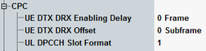

General CPC Settings
This section describes the settings of the DTX-DRX timing information and the UL DPCCH slot format, see also "Continuous Packet Connectivity (CPC)".
All parameters for the DTX-DRX timing information are defined in 3GPP TS 25.331. The UL DPCCH slot format is defined in 3GPP TS 25.211.

DTX-DRX timing information and DPCCH format
Time the UE waits until enabling a new timing pattern for the DRX/DTX operation.
Remote command:Offset of the DTX/DRX cycles at the given TTI.
This parameter is used to spread the transmission of the different UEs.
Remote command:Defines the UL DPCCH slot format used by the CPC.
In the R7 a new UL DPCCH slot format no. 4 was introduced, see "Continuous Packet Connectivity (CPC)".
Remote command: